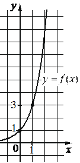

Авторский разбор и аудит предварительны; внешней экспертизы нет.
Модель автора: claude-opus-5-5 (opus; effort=low); в основных частотах: True ·
Впишите правильный ответ.
На рисунке изображён график функции вида Найдите
значение

КЭС: 3.5 Показательная и логарифмическая функции, их свойства и графики
27
| ID / вход | Действие | Результат | Локальные KC |
|---|---|---|---|
| s1 · condition | Считать с графика координаты отмеченной точки графика с ненулевой абсциссой | Точка (1; 3) принадлежит графику | kc1 |
| s2 · condition, s1 | Подставить координаты точки в f(x)=a^x и найти основание | a^1=3, a=3 | kc2 |
| s3 · condition, s2 | Вычислить значение функции f(x)=3^x в точке x=3 | f(3)=27 | kc3 |
[
{
"id": "m1",
"name": "Восстановление формулы функции по точке графика и вычисление значения",
"step_ids": [
"s1",
"s2",
"s3"
]
}
]Вход: график функции на координатной сетке; операция: определить целые координаты отмеченной точки графика; граница: точки, лежащие в узлах сетки.
{
"local_kc_id": "kc1",
"status": "match",
"catalog_kc_id": "graph_coordinates",
"evidence": [
{
"ref": "step:s1:action",
"quote": "Считать с графика координаты отмеченной точки графика с ненулевой абсциссой"
},
{
"ref": "step:s1:result",
"quote": "Точка (1; 3) принадлежит графику"
},
{
"ref": "image:assets/044ea160df7148df353f00d0.png",
"region_description": "Клеточная сетка с осями x и y; на графике отмечены точки при x=0, y=1 и при x=1, y=3 (подписи 1 и 3 на оси y, 0 и 1 на оси x, пунктирные проекции)"
}
],
"context_refs": [
"condition"
],
"alternatives_checked": [],
"rationale": "Считывание координат отмеченной точки по масштабу сетки; рисунок подтверждает точку (1;3). Восстановление формулы в шаг не входит, что соответствует границе определения.",
"proposal": null,
"blocking": false,
"issue_ids": []
}Вход: формула функции с неизвестным параметром и точка графика; операция: подставить координаты и решить полученное уравнение относительно параметра; граница: уравнение однозначно разрешимо с учётом ограничений на параметр (для показательной a>0, a≠1).
{
"local_kc_id": "kc2",
"status": "match",
"catalog_kc_id": "literal_3ac0ecd3cd49",
"evidence": [
{
"ref": "step:s2:action",
"quote": "Подставить координаты точки в f(x)=a^x и найти основание"
},
{
"ref": "step:s2:result",
"quote": "a^1=3, a=3"
}
],
"context_refs": [
"condition",
"step:s1:result"
],
"alternatives_checked": [
{
"catalog_kc_id": "direct_proportion",
"reason": "Относится к y=kx, а не к показательной функции"
},
{
"catalog_kc_id": "exponential_equation",
"reason": "Приравнивание показателей при общем основании; здесь неизвестно основание"
}
],
"rationale": "Локальный кандидат сформулирован общо (параметр любой функции), но наблюдаемое действие — нахождение основания y=a^x по точке с ненулевой абсциссой x=1, что целиком совпадает с определением каталожного узла.",
"proposal": null,
"blocking": false,
"issue_ids": []
}Вход: полностью заданная формула функции и значение аргумента; операция: подставить аргумент и вычислить; граница: аргумент в области определения.
{
"local_kc_id": "kc3",
"status": "match",
"catalog_kc_id": "literal_6308771d01a6",
"evidence": [
{
"ref": "step:s3:action",
"quote": "Вычислить значение функции f(x)=3^x в точке x=3"
},
{
"ref": "step:s3:result",
"quote": "f(3)=27"
}
],
"context_refs": [
"step:s2:result"
],
"alternatives_checked": [
{
"catalog_kc_id": "physical_formula_substitution",
"reason": "Касается прикладных формул с величинами и единицами"
}
],
"rationale": "Подстановка аргумента в установленную формулу 3^x и вычисление 27; совпадает с определением.",
"proposal": null,
"blocking": false,
"issue_ids": []
}[]
[]
{
"author_path": "data/annotation/runs/2026-11-09-fipi-team-bogdan108-next-100/raw/author/8BF7C8.json",
"auditor_path": "data/annotation/runs/2026-11-09-fipi-team-bogdan108-next-100/raw/auditor/8BF7C8.json",
"accepted_after_review": null
}